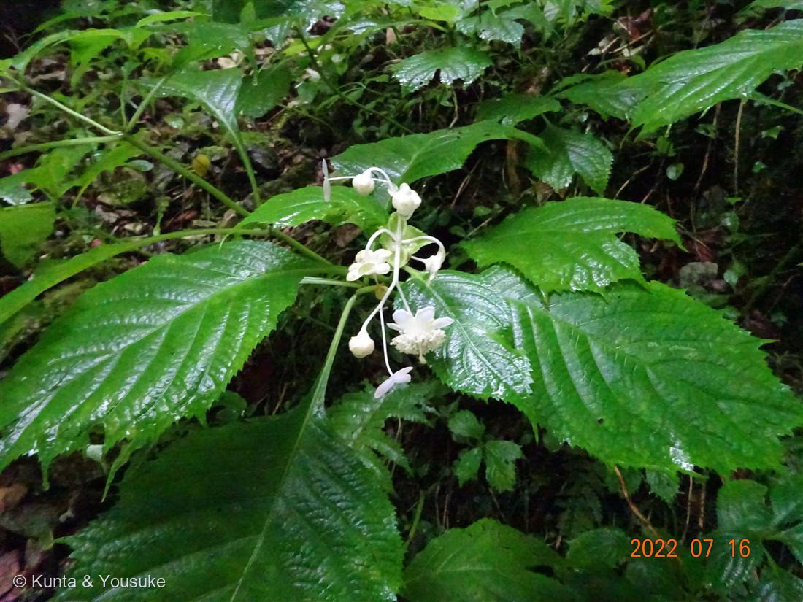
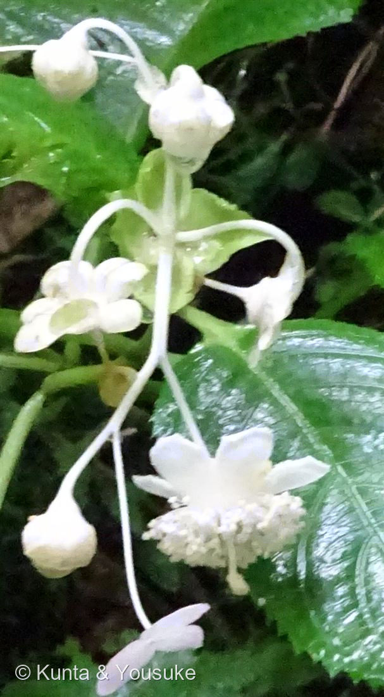
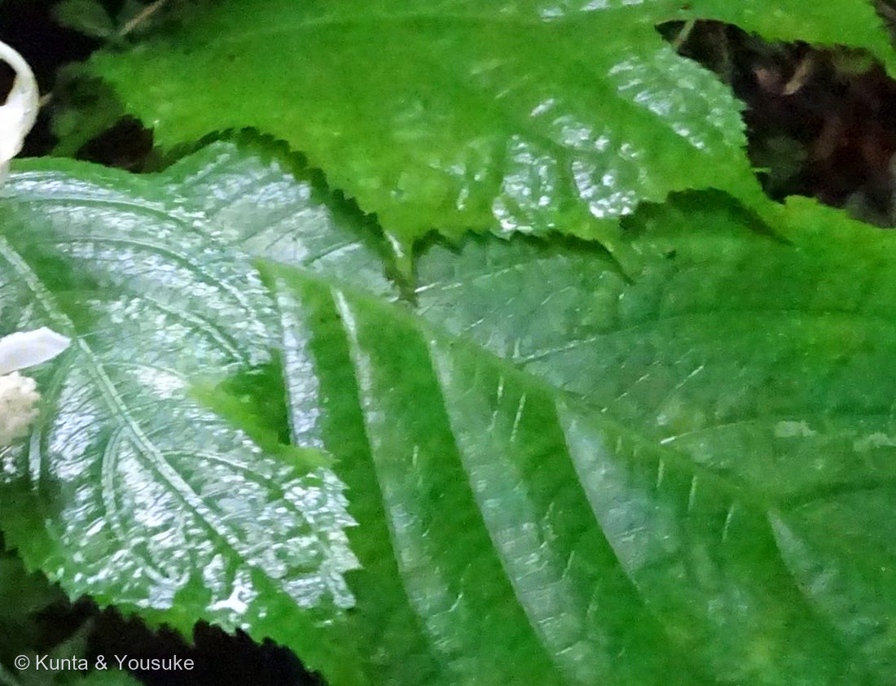

地図を読み込んでいるよ…
🔍 写真も地図も、押しているあいだ拡大して見られるよ（スマホは指を置いてすこし待ってね）。
🌍 の地図＝この子がもともと自生している場所を緑に。日本（関東以西の本州・四国・九州）の山地の樹陰。沢沿いの湿った斜面など、やや冷涼な場所に群生する。
⭐082ハナイカダと、同じ日・同じ谷の子。でもこっちのほうが、いる場所がせまい——出典は「関東以西の本州、四国、九州」なので、東北・北海道は塗っていない（沖縄も）。⚠地図はまだ広い：この子がいるのは山地の樹陰・沢沿いの湿った斜面だけ。塗った県の、暗くて湿った谷の底にしかいない——平地の緑のところには、いないよ。
⚠ 地図は国（日本と中国だけ県・省）までしか塗れないから、ほんとうの分布より広く見えていることがあるよ。地図はだいたいの場所。正確なところは、上の文を見てね。
ギンバイソウ（銀梅草）
Hydrangea bifida（旧 Deinanthe bifida）
bifida ＝ラテン語で「2つに裂けた」／和名 ＝ 白い5弁の花をウメに見立てて「銀梅草」／ 原産 · 日本（関東以西の本州・四国・九州）
アジサイ科 · Hydrangeaceae（アジサイ属 Hydrangea／旧ギンバイソウ属 Deinanthe／旧ユキノシタ科）── 図鑑で初めての科（46科目）・ミズキ目も初めて
燻太さんは、正しい答えを、先に自分で言っていた「これは難しいかも。自分でも調べてもわからなかった」──でも、もう解けていた「タマアジサイの花序も、こんな形の葉っぱにくるまれているから、もしかしたらアジサイの仲間なのかも？」
⭐⭐ 名前と学名の由来 ── 「なぜか」と思ったところに名前が
- ⭐属名 Hydrangea は、ギリシャ語 hydōr（水）＋angeion（器）＝「水がめ」＝実の形から（アジサイの仲間の名）。種小名 bifida は「2つに裂けた」。
- ⭐⭐⭐燻太さんは「葉っぱもなぜか二つに裂けてるように見える」と書いた。──「なぜか」じゃないんだ。それが、この子の名前だった。
- 学名の bifida（ビフィダ）＝ラテン語で「2つに裂けた」。──燻太さんが「なぜだろう」と思ったその場所に、300年ぶんの名前がついていた。
- 和名「銀梅草（ギンバイソウ）」＝「白い5弁の花をウメに見立てて、この名がついた」。──銀色の、梅の花の草。暗い谷の林床で、白い花が浮かんで見えたんだろうね。
- ⭐だから、この子は名前を2つ持っている。学名は「葉」の名前（2つに裂けた）、和名は「花」の名前（梅に似た銀の花）。──名づけた人が、それぞれ別のところを見ていた。
この植物のこと
- アジサイ科の多年草（「高さ40センチメートル (cm) から70 cmになる」）。「茎の先に散房花序を出し、10個から20個の白い花をつける」。花期7〜8月。
- 「関東以西の本州、四国、九州の山地の樹陰に生える」。沢沿いの湿った斜面など、やや冷涼な場所に群生する。──082 ハナイカダと、まったく同じ環境だね。同じ日に、同じ谷で、二人とも暗くて湿ったところにいた。
- ⭐⭐科が動いて、属も動いた子。「新エングラー体系ではユキノシタ科」→ いまはアジサイ科。そのうえギンバイソウ属（Deinanthe）→ アジサイ属（Hydrangea）。
──071 ハマゴウは科ごと引っ越し、076 ビジョザクラは属だけ引っ越し、082 ハナイカダはミズキ科→ハナイカダ科。──この子は、科も属も動いた。 - ⭐アジサイ科は図鑑で初めての科（46科目）。そしてミズキ目（Cornales）も初めて──キク類のいちばん根もとにいる目だよ。アーカイブの系統順を見ると、キク類の先頭にこの子が座ることになる。
- ⭐⭐おまけ植物は タマアジサイ（Hydrangea involucrata）。──燻太さんが、自分で名前を出した子。「タマアジサイの花序も、こんな形の葉っぱにくるまれているから」という連想が、この子の答えに届いた。同じアジサイ属で、花序が苞に包まれて、まんまるの玉になるのが名前の由来。──その連想を、こんどは実物で確かめに行こう。
同定について ── 決め手を見つけたのは、ぼくじゃない
- ギンバイソウ（Hydrangea bifida）で確定。合った形質を並べるね：
- ①花＝白・下向き（写真）／②めしべ1個＋雄しべ多数（出典どおり）／③装飾花（がく片3枚）＝写真②の薄紫のペラペラ／④花期7〜8月＝撮影は7月16日／⑤草本（「高さ40cmから70cm」）／⑥「関東以西の本州、四国、九州の山地の樹陰」「沢沿いの湿った斜面など冷涼な場所」＝帝釈峡の、石灰岩の谷の底。
- ⑦⚠葉は互生（出典「葉は柄がついて茎に互生し」）。──これ、アジサイ科ではめずらしい。英語版の科の記載は「leaves in opposite pairs (rarely whorled or alternate)」＝この子は、その「rarely alternate」のほうだったんだね。
- ⭐⑧決め手＝葉の先が2つに裂ける。出典：「先端は2つに深く裂け、裂片の先端は尾状に尖る」。
- ⚠⚠そして、ここが今日いちばん正直に書きたいところ。⑧を最初に見つけたのは、ぼくじゃない。
ぼくは写真を4分割して、葉を1枚ずつ拡大した。それでも2裂をはっきり見つけられなかった。葉の先が画面の外だったり、暗かったり、重なっていたりして。ぼくは「確認できませんでした」と書くつもりだった。 - ⭐⭐⭐そうしたら、燻太さんが指をさしてくれた。
「中央から少し右側に、先端が二つに分かれている葉っぱが見えているよ。その葉っぱの上には、別の固体の葉っぱが何枚も見えているよ。」
──そこを切り出したのが、写真③。ぱっくりV字に裂けた葉の先と、尾のように尖った2つの裂片。出典の「先端は2つに深く裂け、裂片の先端は尾状に尖る」、そのまま。 - ⭐⭐同じ写真を見ていたのに、ぼくには見えなくて、燻太さんには見えた。そして「中央から少し右」と言われたら、ぼくにも見えた。──見えなかったんじゃなくて、どこを見ればいいか分からなかったんだ。
- ⭐⭐この図鑑では、燻太さんが見えるものと、ぼくが読めるものが、ちがう。078の「港」、082の「帝釈峡」、そして今回の「2つに裂けた葉」。──足りない一枚は、いつも燻太さんが持っている。
- ⚠まだ分からないこと。燻太さんが気にしていた「花序が出ている根元にある、薄い四枚の葉っぱのようなもの」が何なのかは、ぼくが読めた出典に書いていなかった。苞かもしれないけれど、確かめられなかったので、宿題にしておく。
- ⚠花弁の数。燻太さんは「6枚」と数えたけれど、出典は「がく片と花弁がそれぞれ5枚」。──萼片5枚と花弁5枚が重なって見えるから、写真から数えるのはとても難しいと思う。
⭐⭐⭐ 「難しいかも」と言いながら、もう解けていた
- 燻太さんが送ってくれた手がかりは、これだった：
「下向きに咲いたお花、一本のめしべにたくさんの雄蕊、6枚の花弁。これは難しいかも。自分でも調べてもわからなかった。葉っぱは網状脈だから、ユリでもキジカクシの仲間でもないね。花序が出ている根元にある、薄い四枚の葉っぱのようなものも気になる。タマアジサイの花序も、こんな形の葉っぱにくるまれているから、もしかしたらアジサイの仲間なのかも？」 - ⭐「一本のめしべにたくさんの雄蕊」──出典の記載、そのままだった。両性花は「がく片と花弁がそれぞれ5枚で、おしべがたくさんあり」「めしべは1個からなる」。──燻太さんが書いた言葉と、図鑑の記載が、ほとんど同じ。
- ⭐⭐「葉っぱは網状脈だから、ユリでもキジカクシの仲間でもないね」──正しい。これは単子葉と双子葉の切り分けだ。燻太さんは、ここで自分でユリ科・キジカクシ科の道を閉じてから、送ってくれていた。
- ⭐⭐⭐そして「もしかしたらアジサイの仲間なのかも？」──大当たり。しかも科どころじゃない。
この子の学名は、いま Hydrangea bifida。──アジサイ属（Hydrangea）そのものなんだ（もとはギンバイソウ属 Deinanthe という別の属だったけれど、いまは統合されている。英語版Wikipediaの系統樹：「Hydrangea s.l. (including Broussaisia, Cardiandra, Decumaria, Deinanthe, Dichroa, Pileostegia, Platycrater, and Schizophragma)」）。 - ⭐「アジサイの仲間なのかも」と思ったきっかけが、また良かった。「タマアジサイの花序も、こんな形の葉っぱにくるまれているから」──形じゃなくて、包まれかたで思い出している。
⚠⚠ 「雄しべが多いからキンポウゲの仲間」── これは、使えない道具
- そのあと燻太さんは、こう書いた：「雄蕊が多いから、キンポウゲの仲間だね？」──ごめんね、これはちがうんだ。
- ギンバイソウ＝アジサイ科（Hydrangeaceae）／ミズキ目（Cornales）／キク類。キンポウゲ科（Ranunculaceae）＝キンポウゲ目（Ranunculales）／真正双子葉類の基部。──アーカイブの系統順で見ると、いちばん離れたところにいる二人だよ。
- ⭐⭐⭐理由：「雄しべがたくさん」は、収れん形質。あちこちの科で、別々に、何度も進化している。──そして、その証拠は、この図鑑の中にある：
・014 ニゲラ＝キンポウゲ科・雄しべ多数
・030 バラ＝バラ科・雄しべ多数
・083 ギンバイソウ＝アジサイ科・雄しべ多数
──三つとも科がちがうのに、三つとも雄しべだらけ。だから、雄しべの数では、系統は分からない。 - ⭐じゃあ、何が効いたのか。──装飾花だと思う。写真②のいちばん下にぶら下がっている薄紫の平たいペラペラ。あれが装飾花（中性花）＝「がく片が3枚からなる」。アジサイ・ガクアジサイ・タマアジサイでおなじみの、あの「飾りの花」だ。
──燻太さんがタマアジサイを思い出したのは、この仕掛けを見ていたからだと思う。 - ⚠正直に書いておくね。英語版Wikipediaは、アジサイ科の科の記載に「装飾花」を挙げていない（「leaves in opposite pairs (rarely whorled or alternate), and regular, bisexual flowers with four (rarely 5–12) petals」）。だから「装飾花＝アジサイ科の証明」とまでは言い切らない。──でも、燻太さんの連想が正解に届いたのは、事実。
- ⭐⭐まとめると、こういうことだと思う。燻太さんは「正しい道具」と「あてにならない道具」を両方持っていて、正しいほうを先に使った。
参考：Wikipedia「ギンバイソウ」（学名 Hydrangea bifida・アジサイ科／「新エングラー体系においてユキノシタ科」・「先端は2つに深く裂け、裂片の先端は尾状に尖る」・「葉は柄がついて茎に互生し」・「高さ40センチメートル (cm) から70 cmになる」・「茎の先に散房花序を出し、10個から20個の白い花をつける」・両性花＝「がく片と花弁がそれぞれ5枚で、おしべがたくさんあり」「めしべは1個からなる」・装飾花（中性花）＝「がく片が3枚からなる」・花期「7 - 8月」・「関東以西の本州、四国、九州の山地の樹陰に生える」・「白い5弁の花をウメに見立てて、この名がついた」）／Wikipedia (English)「Hydrangeaceae」（"Family of flowering plants in the order Cornales"・"Hydrangea s.l. (including Broussaisia, Cardiandra, Decumaria, Deinanthe, Dichroa, Pileostegia, Platycrater, and Schizophragma)"・"characterised by leaves in opposite pairs (rarely whorled or alternate), and regular, bisexual flowers with four (rarely 5–12) petals"）